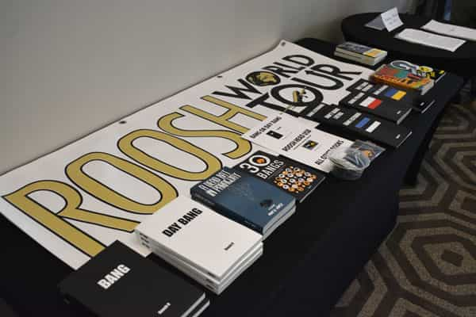

Kalos is an amateur Classicist with a penchant for bodybuilding


Free Speech Isn’t Free by Roosh is the firsthand account of a live education in what freedom of speech precisely entails, how to safeguard it, and where the threats to it will be coming from and why.
There are costs when one wishes to speak freely and he describes the price of admission, the grit and the conviction required in our collective pursuit of freedom of speech and its natural corollary—freedom. We might be defamed, scandalized, and mobbed with an end towards frightening us back into submission, however through Roosh’s struggles we are provided hope that resistance is not pointless.
I can offer some preliminary words here and say that this book is an enthralling read, one that covers events that I was reading about and following in real-time last year through the Roosh V Forum and Return Of Kings. Roosh’s candor is at times unexpected, moving and enlightening; and it is always appreciated.
The points that are driven home throughout the work are correspondingly informed by the events leading up to and incorporating Roosh’s World Tour in 2015. This lecture tour (whereby Roosh attempted merely to speak to like-minded men and field their questions) actually turned out to be a life-changing experience for himself at every city he visited.

In the first chapter, we see Roosh’s battle with a slight speech impediment that has been with him since childhood. He describes himself as being more of a writer than a speaker. Roosh seems to imply here that before speaking freely, one should first learn how to speak properly.
He takes a Toastmaster’s course to improve his public speaking and learn about the principles of creating a coherent and cohesive speech and how to deliver it in such a way that the audience is receptive to his ideas. We not only see what Roosh has learned, but we’re shown what it takes to improve one’s self and ‘tend the fire;’ a fire, that is, which burns towards an ideal of perfectibility in spite of innate shortcomings.
At the first stop on his tour, Roosh is confronted with a wide variety of men in attendance. He witnesses the vastness in the range of demographics he speaks for and to—from younger men full of spunk who are mainly interested in attracting women, to older gentlemen who have had their lives turned upside down by divorce (sometimes multiple times).
Here Roosh learns that he speaks for a wider audience than he had previously imagined, and that his words may have consequences beyond some specific target he may have had in mind. Indeed, what we say while exercising our right to free speech often has an effect beyond our initial reckoning. In a touching moment of humility upon realizing the scope of his power, Roosh declares, “I vowed never to take the influence I have with these men for granted or use it in a way that leads them down the wrong path.”
Here Roosh allows the media (“Vice” with Reggie Yates) into his lecture and in addition he allows a seemingly sympathetic woman to work for him as a hostess for the event. The media, it seems, would prove to be just as conniving as the hostess who later wrote a hit-piece for the Huffington Post about her experience at the lecture.
Any pretensions that the media might have towards an unbiased statement of fact or non-emotional reporting of events goes out the window with Vice’s slanted reporting here and the hostess’s unbecoming behavior during and after the lecture. Reggie and the hostess both had one thing in mind: try to make Roosh look bad. Roosh listened to the Vice’s reporter’s lies that concealed her background and the woman’s plea for a hostess gig, and he generously accepted. Their attempts to ingratiate themselves and then backstab Roosh were seemingly successful, yet Roosh is quick on the turn.
What does Roosh learn? “Don’t invite leftists who cause men to speak through a filter. It’s pointless to have a private event where men can speak freely and then bring feminists and media who put the filter right back on.” Roosh’s insight might seem facile, but what he is actually affirming is his preference for ingenuousness amongst his brothers at the cost of shunning potentially lucrative media exposure. These events foreshadow the development of Roosh’s volcanic hatred and distrust of the media, something that fully blossoms later in Montreal and Toronto.
After a successful speech without incident, Roosh chats with all of the attendees but most notably Jeff. Jeff “connects the dots” for Roosh on certain points that have been floating nebulously in his mind.
Roosh describes Jeff’s ideas as being the stuff of “conspiracy theories,” yet after hearing it, Roosh describes his “jaw hanging,” and states that “[Jeff] provided the missing link… Birth control, abortion, female education and employment, rape culture, sexual harassment, homosexual marriage, transsexual acceptance, open-borders immigration, welfare, and multiculturalism.”
What’s the link? “Depopulation And Human Control… The one common end goal, whether accidental or deliberate, is to reduce the reproductive rate of the native-born population as a means of controlling them.” The entire chapter is an exploration of this revelation and something Roosh later elaborated on here:
In the end, Roosh states, “I used to seek out men who had high ability in meeting the opposite sex for the purpose of fornication, but lately I’ve been seeking out men for their intellectual ability in order to help me further my understanding of the world. Because of this, I have surrounded myself with some of the smartest men in the West.”
Roosh is obliquely referring to his media creations, which he has learned to view as somewhat of a feedback loop (rather than megaphone) whereby information is freely shared and incorporated by commenters and contributors alike in symbiotic fashion: the students learn from the professors and vice versa.

It’s not so much what Roosh learns here that is striking, but rather his uncanny ability to explicate the nature of his appeal to Western men. Before the lecture he’s asked, “What do you think are the problems for men today?” His answer:
Men have no voice. The entire establishment is bending over to cater to the needs of women, gays, and immigrants, the latter of which don’t even want to assimilate or adopt Western ideals, and now they’ve started pushing transsexual acceptance. Huge amounts of media air time, financial resources, university regulations, and social policies are now going to these groups… with the goal of making [Western men] subservient to every other identity group but his own… No one has the backs of men except a few lone voices like myself, and that’s shameful.
“Men have no voice.” It’s simple and it gets right to the heart of the matter. We feel robbed of our freedom to speak our minds and express our opinions. The leftist bullies, the violent antifas, the overzealous forum moderators and the affected fragility of feminists in the workplace all have one aim in mind—to shut down the free speech of men and thereby paralyze us into subservience or run us out to the woods. By fighting back, Roosh exemplifies a third-way.
Roosh goes on to give his prognosis of what the future has in store, a development that reflects the desperation of men who feel threatened and cornered at every turn. “What I believe will end up happening is that a more white nationalist element will take hold, because they will speak to men who are actively being disenfranchised. It becomes a matter of self-defense and self-preservation. These men are getting angry and more determined to protect their rights and their race. There will be dark times ahead.” This is beautifully and tragically stated. These leftists, feminists and multiculturalists are creating the very things they presume to oppose.

Here Roosh’s lecture is canceled by the venue he had scheduled. Roosh later makes a powerful statement about conviction and how it bolsters the passions that make life worth living. “Some men will encounter a battle during their lifetimes where the decision to not fight will make him feel ashamed and weak for the rest of his days, and where the pain of defeat can’t be worse than the shame of not fighting at all. When this battle comes, he will be ready to sacrifice everything… Before Canada, I had not encountered such a fight, but it finally arrived and I was not going to back down.”
This type of conviction and willingness to sacrifice is the stuff of leaders. Roosh thus learns an important lesson about leadership: be willing to make personal sacrifices, especially for the men who follow you. For any leader, all successes of a movement rightfully belong to them as the victor and all failures belong to them too. Roosh comes to embrace the weight of this responsibility during the Battle of Montreal and he chooses to make his stand. Against overwhelming odds, he took on a hostile media establishment with politicians and feminists in tow, and he seized a great victory.
At the end of his victory speech, Roosh says:
Here’s your movement… Here are the men who sacrificed their identities to come hear a talk that was trashed by the entire establishment. Imagine if there were one million men like this in the country, men who are fearless, strong, masculine, and think for themselves. This is why the ruling class is enabling those freaks outside who wish to emasculate men, to make them weak, because weak men are not strong enough to fight and not strong enough to stand up to authority.
While accepting personal responsibility for successes and failures, any true leader worth his slat ultimately empowers the men that follow him. While I used to cringe when I read that Roosh’s contributors and readers were referred to as “followers of Roosh,” I think I get why now. It’s because Roosh has become the spokesman, supporter, and inspiration for a movement of men who collectively pursue a life of their own choosing for themselves, their families, each other, and a future that seems at times too dim to imagine.
In the end, Roosh describes an important lesson he learned about the collusion that occurs between the various tendrils of a system when it is forced to confront the spread of an idea that is antithetical to its corrupt persistence. “I needed to see this… I got to see how the media, government, and non-profit organizations collaborate when they want to neutralize an enemy, and how they enable the foot-soldier class of students and unemployed losers to do their bidding.”
During his final stop on the tour, Roosh again must confront the threat of hysterical protests and a hostile media and political establishment (including a city councilman and the Toronto mayor).
After being backstabbed once again by a reporter who Roosh thought was at least somewhat sympathetic and willing to tell his side of the story, he truly earns his stripes when it comes to hating the media. It’s not that he senses the affront of being lied to as most of us might, it’s that he has experienced the lies being told about himself.
Hatred is born of such things and the mainstream media is now a thing of scorn for Roosh. If he ever again indulges their requests, it will most likely be to mock or berate them as he does after the ‘ROK Meetup Outrage’ in his D.C. press conference:
For the readers wondering what Roosh’s speeches were all about on his lecture tour, he sums it up pretty well later in the chapter:
I described the problems men were facing… I listed the sacrifices they must make to have a good woman in their lives. I described why practicing game is so important, and how it serves as the gateway drug to greater truths. I gave seven practical tips for getting laid that took me years to learn. I told them what I believed was necessary to enjoy life. I gave them tips on what to do when they’re at a down point of their lives… I had a right to give that speech and they had a right to hear it, and so it was done.
If you want to learn more, the full transcript of his lecture is included at the end of the book in addition to a number of other bonuses (viz. “Epilogue 1: The Aftermath,” “Epilogue 2: The Worldwide Meetup Outrage,” “Transcript 1: The State of Man Lecture,” “Transcript 2: Washington, D.C. Press Conference,” “Appendix 1: How To Survive An SJW Attack,” “Appendix 2: What is Neomasculinity?”)
At the end of the Toronto speech, Roosh and the audience are affected to the point of tears by another man’s speech about how Roosh had previously helped him. Roosh comments, “A lot of people have an image of masculinity of a man killing bears with his bare hands, but for me it’s becoming more about brotherhood, a form of love that a man and woman can never feel for each other. It’s not based on emotional connection but mutual goals and compassion that make men feel as if they belong to the same unit—the same tribe.”
He later states, “Courage is contagious.” This is the nut of it all, isn’t it? This is why the book is so important and perhaps why Roosh wrote it in the first place. We are inspired to become courageous after reading about Roosh’s stand and our courage in turn inspires Roosh to keep going, perhaps confirming for him that his courage and victories serve a higher purpose. I wouldn’t doubt that Roosh’s sense of grandeur comes not from his personal victories but rather the thousands (if not millions) of victories he inspires every day within the lives of his readers. Our own sense of rising towards great things is the ultimate testament to Roosh’s courage, his victories, and his life’s work.
Pondering his tour in the end, Roosh considers that none of it was without meaning. He affirms his life’s ambition and his desire to lead others towards the truth. It is this cascading sense of purpose that has driven him to write the book, “Not just as a monument to me and my supporters’ victory, but to educate men on how the system is actively working to harm them. You have now experienced what I’ve experienced… If I am meant to accomplish something bigger in life than just getting laid and making money, Canada was the first step in finding out what that is.”
To get your copy of Free Speech Isn’t Free, click here for the PDF copy or click here to order directly from Amazon.
Read More: SJWs Bomb Free Speech Isn’t Free With Fake Reviews Because It Hurts Their Feelings